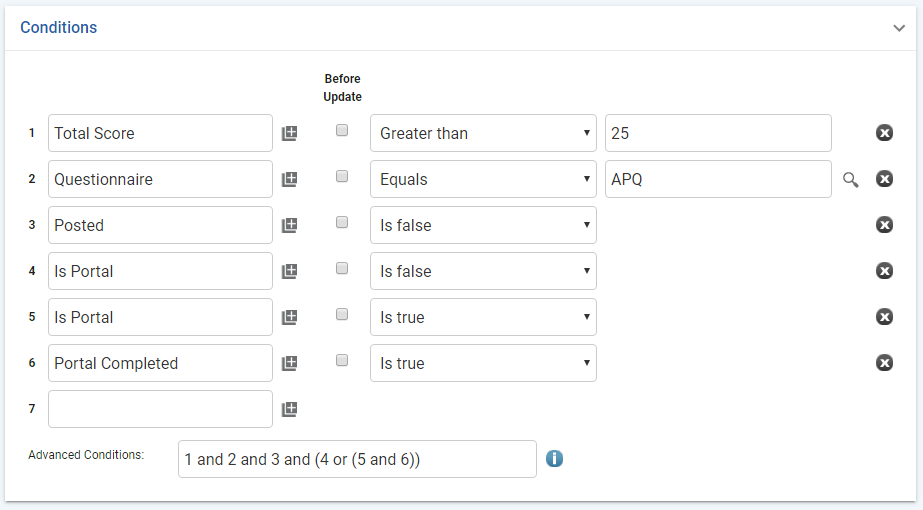

In the appropriate Cloud’s menu, click Questionnaire Inbox. The Online Questionnaire list displays public online questionnaires submitted via the web site or the Portal.
The default view is non-posted questionnaires; if necessary, change this to only view posted questionnaires or to view all questionnaires for that Cloud.
The view will only display questionnaires corresponding to the site security that you have been granted. If the submitted questionnaire is not linked to any health center, or if the employee number entered is not validated in the application, then it will be visible for all users until posted.
Click the link of the questionnaire you want to post. When it opens, make any changes required, click Save, and then choose one of the following actions:
Actions»Post to Questionnaire -- The questionnaire will be visible in the Questionnaire list in the Cloud’s menu, as well as in the Posted view of the Questionnaire Inbox. You can also use this action at the Online Questionnaire list level to post multiple questionnaires at the same time.
Actions»Post to <module> -- Select a module (limited to the modules in the same Cloud). You are prompted to enter the number of the record to which the questionnaire will be attached. If the questionnaire is linked to the selected module, you have the option of creating a new record instead. In the new record, some fields will be populated with responses from the questionnaire’s; if more than one question maps to the same field, a new record will be created for each. The questionnaire is listed on the Questionnaires tab of the record.
If multiple employee record matches are encountered and one of them is active, the questionnaire is linked to the active employee record, instead of any older, inactive employee records.
You can set up a business rule that will automatically post a questionnaire under specific conditions. For example, you may want to auto post a particular occupational health questionnaire taken by a user from standalone, portal, or myCority, where the score is above a given threshold.
Whenever the questionnaire that meets these conditions is submitted, it will skip the Questionnaire Inbox and get automatically posted to the Questionnaire module of the related Cloud. If that particular questionnaire is mapped to a specific module (e.g. Travel), it would get posted to that module as a new record and not the Questionnaire module.
Create the business rule (see Setting Up Business Rules), selecting the appropriate [module]PublicQRH entity, e.g. EnvironmentalPublicQRH.
Define the conditions under which the questionnaire will autopost. For example:

Set the Trigger to Update.
On the Action List tab, create a method action that points to the AutoPostQuestionnaire method.